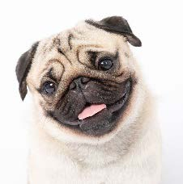
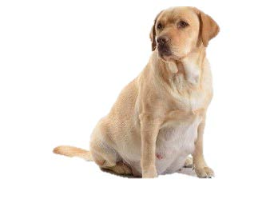
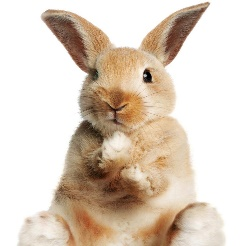
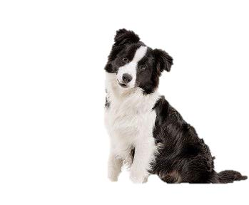

La empresa se a comprometido a proporcionar calidad de alimentación y necesidades de las mascotas del todo el país para ofrecer una excelencia y valor de los consumidores, así como de sus clientes.
Misión
Pets es una empresa dedicada a la venta de comida, medicamento, ropa y accesorios para mascotas; brindando la posibilidad de complacer a sus clientes con cuidados de su mascota, tales como: perros, gatos, hámster entre otros; con base en el compromiso, el servicio, la eficacia y la responsabilidad social con nuestros grupos de interés.
Visión
Ser la empresa reconocida en el ámbito Social y tecnológico, en distribución y comercialización de productos para mascotas, destacando la buena calidad, variedad e innovación, a precios razonables.
Valores
-
COMPROMISO: Los beneficios que trae el desempeño responsable de las tareas a cargo.
Permite pasar de las promesas a los hechos, generando resultados y beneficios tangibles. -
CUMPLIMIENTO: Es la realización de nuestro trabajo acorde con las características de calidad, cantidad y oportunidad negociadas y anunciadas.
En nuestra actividad, este valor se refleja de manera especial en el servicio al cliente. -
AGILIDAD: Es la flexibilidad con la que desarrollamos nuestro negocio y nos adaptamos constantemente a las necesidades y deseos de nuestros clientes.
-
INNOVACIÓN: Es la aplicación eficiente de la creatividad. Reinvención de los productos, las estrategias, las actividades y las funciones con miras a su mejoramiento.
-
CALIDEZ: Refleja el amor, la vocación y el respeto a los demás. Es el afecto, la cordialidad y la amabilidad en el trato con nuestros clientes, socios comerciales.
-
SERVICIO: Como valor supremo, la calidad del servicio al cliente es lo que nos distingue de la competencia y constituye un factor del éxito de nuestro negocio.
-
HONESTIDAD: Con nuestros clientes y a la buena comunicación como valores fundamentales.
-
CALIDAD: Productos y servicios que ofrecemos.
-
PROFESIONALIDAD: Nuestro equipo de profesionales está altamente cualificado para ofrecer la mejor atención y una experiencia inmejorable.
-
RESPONSABILIDAD: Obramos con seriedad, acorde con nuestra propuesta de valor.
Historia
Fecha de creación: 1 de Enero del 2022
Fundada por: Zamara Ojeda Sánchez Estudiante de la LIC. En Informática En la Universidad Autónoma de México.
Se ubica: La delegación Azcapotzalco, CDMX
Lugar donde vive, mismo donde surge la idea de la creación del proyecto.

Pets tiene sus orígenes en La Ciudad de México, donde llevamos ayudando a nuestros clientes en el cuidado de sus mascotas. Nace con el fin de dar un salto de calidad en la profesionalización de los servicios digitales tales como el Diseño y Desarrollo Web, el Marketing Online y la Generación de Contenidos Digitales.
El planteamiento de negocio nace en un salón de clase, cuando se intentaba crear una revolución en el marketing utilizando las nuevas tecnologías. Notamos que la mayoría de los clientes desean adquisiciones de productos rápidos, seguros y fáciles. Pero también se pretendía involucrar a nuestra diversidad de fauna que hay en nuestro planeta y su cuidado.
Esta extravagancia ya ha triunfado en otros lugares del mundo, como en Tokio donde se celebró un encuentro empresarial que tenía a los perros como indiscutibles protagonistas. Una particular feria sectorial donde acudieron empresas que venden aspiradores especiales para recoger desechos perrunos, estudios fotográficos caninos y hasta escuelas de yoga para perros.
Todo surge con la innovación de un marketing online que favorecieran a nuestras mascotas, facilitando a nuestros clientes el cuidado y atención que se merecen.
Se implementa una investigación a nivel país en el medio comercial, donde evaluamos las diferentes tiendas online y los tipos de clientes que tienen.
Y es que algunas personas aman tanto a sus mascotas que las cifras de negocio en esta nueva industria de servicios empiezan a ser verdaderamente impactantes.
Motivaciones
Por una investigación del país sobre el amor que tenemos hacia nuestras mascotas y lo importante que son para nosotros como En el año 2008 en la ciudad de México se realizó un desfile de perros para presentar la última tendencia en moda canina de una conocida tienda departamental mexicana, dentro de una exposición para mascotas realizada. "Podemos encontrar ropa divertida para perros, desde ropa de gala a ropa muy informal, como un disfraz de perro caliente para una salchicha”, indicó a Efe Héctor Rocha, comprador de mascotas para Liverpool, la tienda promotora del desfile "Fashion-pet". Abrigos, bolsas, correas, collares, y demás accesorios para perros de la temporada otoño-invierno fueron aportados por los animales, todos ellos campeones en diversas categorías de concursos caninos, destacó Carla Bravo, coordinadora de modas de la tienda.
Sobre los fundadores
Zamara Ojeda Sánchez fundadora principal de la empresa MY PETS, vive en la Ciudad de México, en la delegación Azcapotzalco. Le gustan mucho los animales y la tranquilidad del bosque.
Hobbies:
- Pasear a sus perros.
- Tomar frecuentemente paseos de noche.
- Ver películas de terror.
- Escuchar música.
- Salir de campo.
Como empresa
- La estrategia de la empresa será marcar diferencia en los caninos con prendas exclusivas, brindando un servicio especial.
- Tener una alta gama de calidad en productos alimenticios, así como medicamento para el cuidado de tus mascotas.
- Donaciones Para refugios caninos u otras especies.
- Brindar atención y seguridad a nuestros clientes.
Experiencias

Canino de edad adulta con problemas de calcio en los huesos:
Se recomendaron vitaminas de alta calidad para el refortalecimiento de huesos.
Cachorro con síntomas de bacterias en los ojos:
Se recomendó gotas para infección cero dañinas y eficientes para combatir sin afectaciones a largo plazo.

Perrita embarazada:
Sugerencia de suplementos alimenticios para recuperar vitaminas perdidas después de aliviarse.

Coneja tamaño grande con problema de dientes:
Se recomendó juguetes para desgastar dientes.

Cachorro con parásitos en el estómago:
Se recomendó una amplia gama de desparasitantes.
Beneficios
- Envíos Gratis a partir de ciertas cantidades.
- Descuentos hasta del 20% en productos.
- Recomendaciones para la salud de tu mascota.
- Obsequios de Snacks para mascotas.
- Cupones de descuento.
Nuestro equipo
Nuestro equipo de trabajo tiene confianza para salir de su zona de confort. Es poco probable que los miembros quieran hacer una tarea específica y repetitiva. Lo cual se interactúa con nuevas responsabilidades que nos permite crecer y tener más confianza, y que al mismo tiempo damos más valor a la Tienda Online. Para el equipo de trabajo es importante la información y comunicación. Saber cómo van los números o cuáles serán los próximos desafíos para participar en la marcha de la tienda.